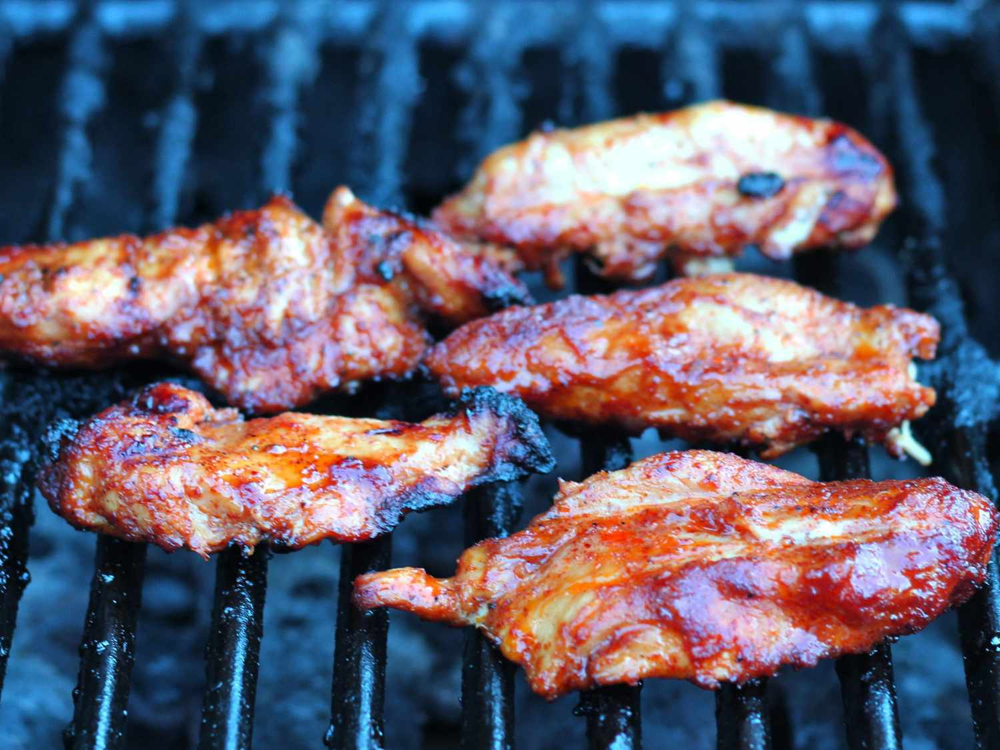

Easy Chicken Fajita Marinade

Description
This simple chicken fajita marinade has been bounced around in my family
for at least 15 years. It's tasty, easily altered for a twist on the
taste, and can be easily prepared in under 15 minutes. Serve with other
fajita elements such as sautéed green bell pepper, white or yellow onions,
jalapeño slaw, homemade tomato or mango salsa, etc.
Ingredients
- 1/2 cup vegetable oil
- 2 tablesppons chili powder
- 2 tablesppons lime juice
- 2 tablesppons honey
- 2 tablesppons garlic powder
- 1/2 teaspoon paprika
- 1/2 teaspoon ground balck pepper
- 3 pounds skinless, boneless chicken breasts, cut into strips
Steps
- Gather the ingredients.
-
Whisk vegetable oil, chili powder, lime juice, honey, garlic powder,
paprika, and black pepper together in a medium bowl until well combined.
-
Place chicken strips in large resealable plastic bag. Pour in marinade
and knead to coat; squeeze out excess air, seal bag, and marinate in the
refrigerator for 4 hours to overnight.
-
Preheat an outdoor girll for medium-high heat and lightly oild the
grate. Remove chicken strips from marinade; discard any unused marinade.
-
Cook chicken on the preheated grill until browned on all sides and
chicken is no longer pink in the center, about 10 minutes per side. An
instant-read meat thermomoeter inserted into the thickest piece should
read at least 160 degrees F(70 degrees C).